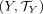
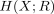
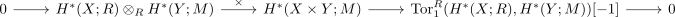
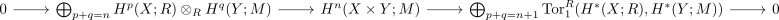

kunneth formula for singular cohomology
1. Proposition
Let  and
and

be topological spaces, a principal ideal domain and
a principal ideal domain and  an
an  -module .
Suppose
-module .
Suppose 
is degreewise a finitely generated module, then there exists a natural short exact sequence
where the first map is the cross product
moreover this sequence splits, but not naturally
note that unravelling the indexes results in

2. Proof
corollary of inner hom tensor map as chain homotopy equivalence
- contravariant ab-hom functor dualizes colimits
- product of flat modules as flat module over a noetherian ring
- PID as noetherian ring
- product of flat modules as flat module over a PID
From here, the argument is entirely analogous to the proof of the algebraic kunneth formula using using flat resolution lemma